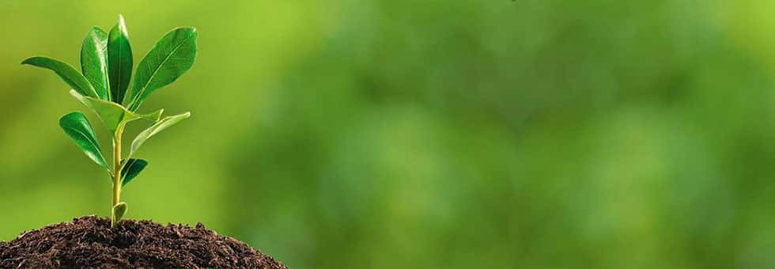
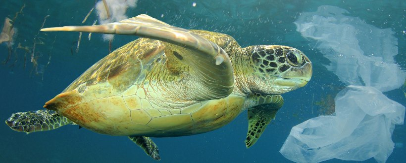

Este es solo un párrafo de prueba, aunque, de todas formas me gustaría entregar un mensaje de protección al medio ambiente. Planeo hacerlo a través de mis fotos.
El mensaje que me gustaría entregar tiene que ver con la belleza del mundo en su vida silvestre, y los que podemos perder si, como sociedad y como especie no lo cuidamos de la manera debida.
Descripción | Material gráfico |
|---|---|
| Una tortuga nadando en su estado silvestre es un claro ejemplo de las situaciones que pueden ser perturbadas debido a la mano del hombre. Si no somos cuidadosos, esotos escenarios podrían nunca volver a repetirse. |  |
| En esta imagen podemos ver una pequeña planta germinando desde la tierra, buscando nutrirse con ayuda de la luz del sol, una prueba minúscula del poder de la naturaleza, particularmente del reino vegetal. |